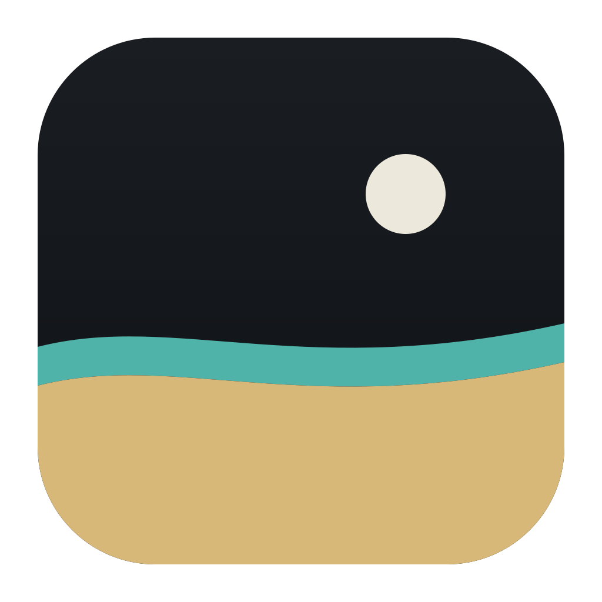
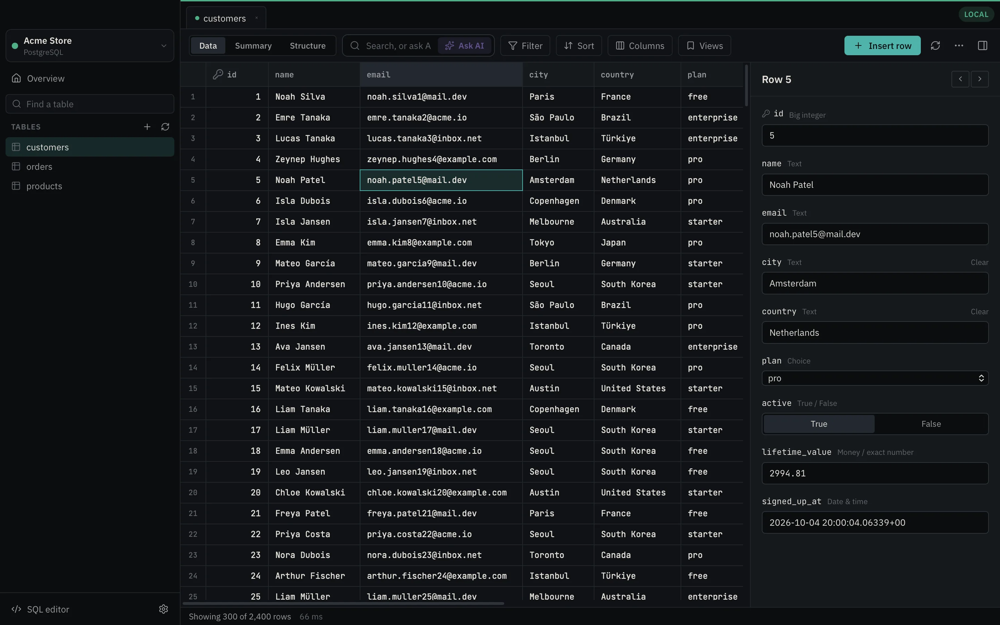
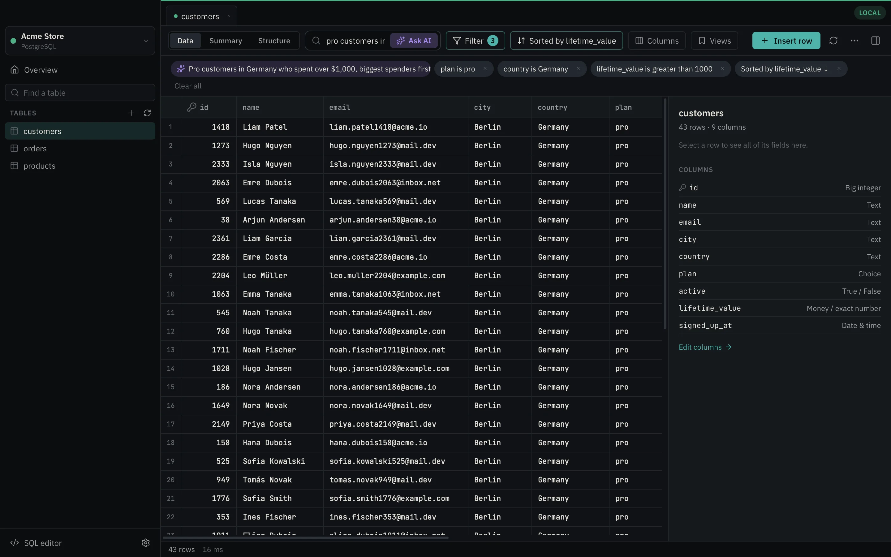
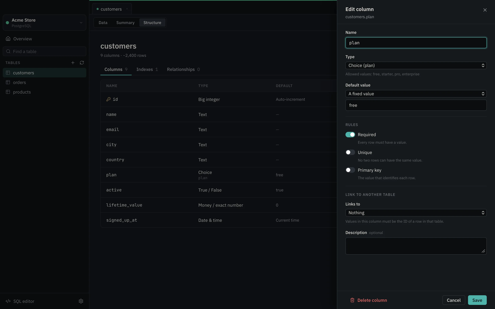
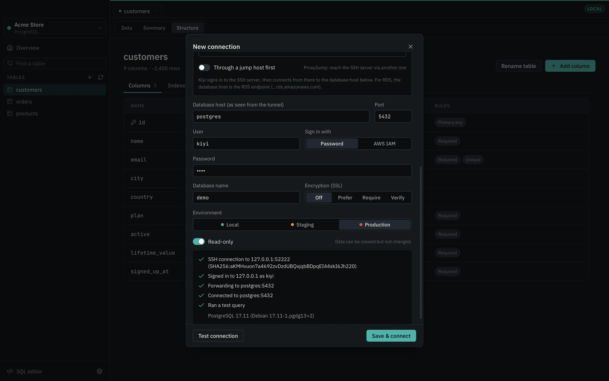

Hesap tablosu gibi düzenle
Bir hücreyi değiştir, hemen kaydedilir; Geri al da hemen yanında. Production bağlantıları açıkça Kaydet demeni bekler. Silmeden önce her zaman sorar.

KiyiKiyi ile herkes PostgreSQL, MySQL, MariaDB ve SQLite veritabanlarını bir hesap tablosu gibi gezip arayabilir, düzenleyebilir; istediği veriyi kendi cümleleriyle sorabilir. SQL bilmek gerekmez. İhtiyacın olan her şey, istediğin anda elinin altında.
macOS (Apple Silicon ve Intel) ve Windows · MIT lisanslı · Hesap gerekmez

Kiyi cümleni tek tek görebileceğin, değiştirebileceğin ve kaldırabileceğin filtrelere çevirir. Göremediğin hiçbir şey çalışmaz.

Uygulamaya gömülü bir tarayıcı yerine bir Rust çekirdeği ve sistemin kendi web görünümü. 2021 model bir MacBook Pro'da, bir milyon satırlık tabloyla ölçüldü.
1.000.000 satırı baştan sona okumak
Kiyi veriyi ağ üzerinden okuyup her değeri tablo için hazırlıyor; resmi komut satırı istemcileri ise veritabanı container'ının içinde çalıştı. Tüm sonuçlar ve nasıl tekrarlanacağı
Bir hücreyi değiştir, hemen kaydedilir; Geri al da hemen yanında. Production bağlantıları açıkça Kaydet demeni bekler. Silmeden önce her zaman sorar.
Kiyi, Mac'inde çalışan PostgreSQL, MySQL ve MariaDB'yi fark eder ve tek tıkla bağlanır.
“Para / tam sayı”, “Zorunlu”, “Benzersiz”, “Müşterilere bağlı”. SQL'i Kiyi yazar.
Bastion üzerinden SSH tüneli ya da hiçbir port açmadan AWS Systems Manager.
Her görünümü CSV ya da JSON olarak dışa aktar. CSV'yi sütun eşleştirmeyle, tek bir ya hep ya hiç işlemiyle içe al.
Production bağlantıları kırmızıyla işaretlenir ve sen aksini söylemedikçe salt okunurdur. Geri dönüşü olmayan her değişiklik çalışmadan önce sade bir dille açıklanır; production'da onaylamak için tablonun adını yazarsın.
Her işlemin arkasındaki SQL'i, ham tipleri ve şemayı tanıyan otomatik tamamlamalı bir SQL editörünü gör.
Anlamlı bir listeden tip seç, sütunu zorunlu ya da benzersiz yap, başka bir tabloya bağla ve o satır silinince ne olacağına karar ver. Kiyi bunları veritabanına uygun ALTER komutlarına, doğru sırayla çevirir.
ON UPDATE korunur.
Bağlantı adresini yapıştır, bir SQLite dosyası seç ya da bir bastion üzerinden geç. Bağlantı testinin her adımı neyin çalışıp neyin çalışmadığını tam olarak söyler.

Ücretsiz. Arka planda kendini günceller, yeniden başlatmadan önce sorar.
macOS 11 veya üzeri
Apple Silicon IntelWindows 10 veya 11, 64 bit
Kurulumu indir Tüm sürümlermacOS uygulaması Apple tarafından imzalı ve onaylı. Windows kurulumu henüz kod imzalı değil: SmartScreen sorarsa Ek bilgi → Yine de çalıştır'ı seç.
Hayır. Gezinme, arama, filtreleme, düzenleme, içe aktarma ve tablo tasarlama; hepsi butonlarla ve sade bir dille çalışır. SQL biliyorsan Geliştirici modunu aç: SQL editörüne erişir, her işlemin arkasındaki komutları görürsün.
Hayır. Kiyi yalnızca tablonun yapısını (sütun adları, tipler ve izin verilen değerler) ve isteğini gönderir, satır verisini asla göndermez. Sağlayıcıyı sen seçersin; istersen Ollama ya da LM Studio ile modeli tamamen kendi Mac'inde çalıştırabilirsin.
Bir bağlantıyı Production olarak işaretlediğinde Kiyi onu varsayılan olarak salt okunur yapar, kırmızıyla çerçeveler, düzenlemelerde açıkça Kaydet demeni bekler ve geri dönüşü olmayan her işlemden önce tablonun adını yazmanı ister. Tablodaki düzenlemeler tek bir işlem içinde çalışır; bu sırada bir satır başkası tarafından değiştirildiyse hepsi geri alınır.
Bir bastion sunucusu üzerinden geçmek için “SSH tunnel”, Systems Manager ile bir EC2 üzerinden geçmek için “AWS SSM” seç. Bağlantı testi her adımı gösterir: tünel, giriş, yönlendirme, veritabanı.
Bugün PostgreSQL, MySQL, MariaDB ve SQLite. Sırada SQL Server var. Kiyi'nin çekirdeği, yeni veritabanları uygulamayı değiştirmeden eklenebilecek şekilde tasarlandı.
Hiçbir şey. Kiyi, MIT lisansıyla ücretsiz ve açık kaynak. AI kullanırsan ücreti doğrudan sağlayıcına ödersin; yerel bir modelle hiç ödemezsin.